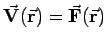
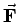
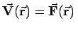
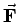

Inhalt Index DeskTop Bronstein

 Vektoranalysis und Feldtheorie Integration in Vektorfeldern Kurvenintegral und Potential im Vektorfeld
Vektoranalysis und Feldtheorie Integration in Vektorfeldern Kurvenintegral und Potential im Vektorfeld


Wenn  ein Kraftfeld darstellt, d.h. , dann ist (13.96a) die Arbeit, die die Kraft  verrichtet, wenn ein Massenpunkt m längs des Weges
ein Kraftfeld darstellt, d.h. , dann ist (13.96a) die Arbeit, die die Kraft  verrichtet, wenn ein Massenpunkt m längs des Weges  bewegt wird (s. Abbildungen und auch (8.130)).
bewegt wird (s. Abbildungen und auch (8.130)).